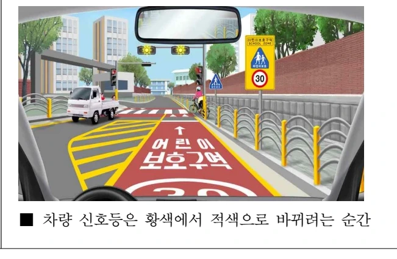

857. Trong tình huống sau, hai cách lái xe an toàn nhất là gì?

- ①Nhanh chóng vượt qua trước khi đèn tín hiệu giao thông chuyển sang đỏ.
- ②Dừng lại tại vạch dừng ngay trước vạch sang đường.
- ③Có vạch sang đường nâng cao cho phép xe đạp băng qua nên cần chú ý khi đi qua.
- ④Đi nhanh qua bằng cách đi vào khu vực an toàn (khu vực dành cho người đi bộ).
- ⑤Cần chú ý vì có thể có trẻ em chạy ra từ phía sau xe tải.
Xem đáp án
Đáp án
② Dừng lại tại vạch dừng ngay trước vạch sang đường.
⑤ Cần chú ý vì có thể có trẻ em chạy ra từ phía sau xe tải.
Căn cứ
Trong khu vực bảo vệ trẻ em, nguy hiểm có thể xảy ra ở những nơi không thể nhìn thấy nên bạn phải lái xe trước với tốc độ giảm dần và cẩn thận với những hành vi bất ngờ của trẻ em. ③ Lối qua đường dành cho người đi bộ được nâng cao là lối qua đường được lắp đặt tại điểm cần nâng lối qua đường lên trên mặt đường để cảnh báo sự chú ý của người lái xe trên những con đường cần giới hạn tốc độ ở mức 30 km/h trở xuống. Hai hình tam giác màu trắng được vẽ ở hai bên lối qua đường dành cho người đi bộ. Xe đạp có thể băng qua đường dành cho xe đạp.
Phần căn cứ là bản dịch máy để tham khảo.